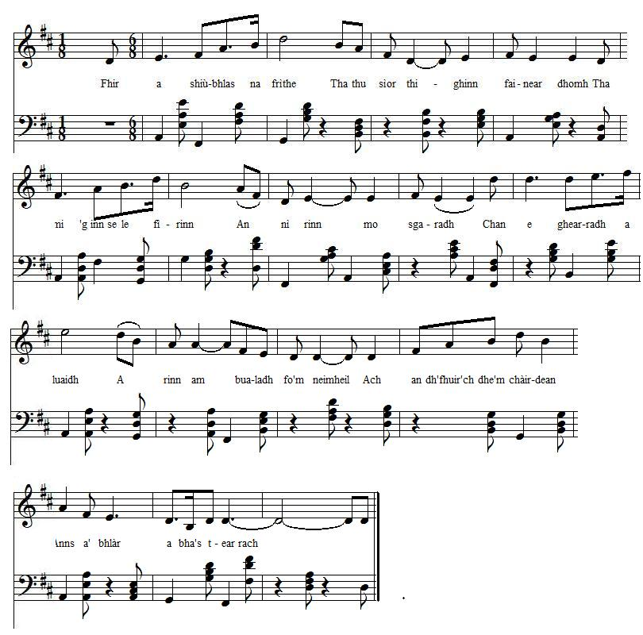

Fhir a Shiùbhlas na Frìthe - You who travel the mountains
Toi qui parcours les monts
Traditional
From "Tobar an Dualchais" (http://www.tobarandualchais.co.uk/fullrecord/92589/1 )Tune - Mélodie
"Fhir a Shiùbhlas na Frìthe"
as sung by Arthur Cormack (Art MacCarmaig, born in 1965, in Portree, Skye)
Sequenced by Christian Souchon (c) 2015

|
To the tune:
Recorded at the National Mòd in Glasgow, (Lanarkshire) in 1988. Comment: "In this song, the composer laments the death of his brother at the Battle of Culloden." |
A propos de la mélodie:
Enregistré au "Mòd" National de Glasgow, (Lanarkshire) en 1988. Commentaire: "Dans ce chant, le compositeur se lamente sur la mort de son frère à la bataille de Culloden." |

|
YOU WHO TRAVEL THE MOUNTAINS
1. You who travel the mountains Are forever coming into my thoughts I am telling in truth What has torn me It wasn't the cutting lead That made the blow so bitter But the many of my friends Who fell in the battle in springtime. 2. My hair has gone gray And my visage changed My eyes are weeping And my heart is sick and wounded For the number of my friends Who remained to be stripped on the battlefield What has increased my pain is Not knowing who spread the earth over them 3. There is not a duke in Scotland Or indeed in England Who wouldn't wish the young and handsome youth To be his son In the beginning of your career You captivated discerning minds You were stalwart and kingly And you were steadfast in the faith 4. But I will cease talking of you Or indeed counting you Since I lost the gifts Which will not return 'til Judgement Day And although King James would come And be proclaimed on every street At the end of each situation My state would be as it is. Source: "Celtic Lyrics Corner", CD "Ruith Na Gaoith" |
FHIR A SHIUBHLAS NA FRITHE
1. Fhir a shiùbhlas na frìthe Tha thu sìor thighinn fainear dhomh Tha mi 'g innse le fìrinn An nì rinn mo sgaradh Chan e ghearradh a luaidh A rinn am bualadh fo'm neimheil Ach an dh'fhuirich dhe'm chàirdean Anns a'bhlàr a bha 's t-earrach 2. Tha mo chiabhag air glasadh Tha mo leth-cheann air muthadh Tha mo shùilean a'sileadh Tha mo chridhe bochd, brùite Le'n a dh'fhuirich dhe'm chàirdean 'S an làr 'n deach a rùsgadh 'S e mheudaich mo chràdh Gun fhios co chàraich an ùr orr' 3. Chan eil diùc ann an Albainn No gu dearbh ann a Sasuinn Nach iarradh an òigear deas òg Bhi na mhac dha Ann an toiseach do thìmeghlac Thu inntinn bha beachdail Bha thu foghainteach, rìoghail Bha thu dìleas bha'n aidmheil 4. Ach sguiridh mise gar'n iomradh Neo idir gar'n àireamh Bho'n a chaill mi na gibhtean Nach tig gu latha bràth 'S ged a thigeadh Rígh Seamas 'S a dh'eidir gach sraid e Ann an deireadh gach cùmailt Bidh mo chùis-sa mar tha e. |
TOI QUI PARCOURS LES MONTS
1. Toi qui hantes nos monts, Comme, à jamais, nos pensées Je te dirai ce dont J'ai surtout l'âme déchirée: Ce n'est pas tant le plomb Qui fit en moi des ravages Que tant d'amis fauchés Dans le printemps de leur âge. 2. Si j'ai les cheveux gris Et parais plus que mon âge, Si mes yeux sont ternis, Si mon coeur bat la chamade, C'est que de tant d'amis On a pillé les dépouilles Et je ne sais par qui Furent refermées les fouilles. 3. Est-il un duc ici Ou bien même en Angleterre Qui n'eût voulu pour fils Un garçon tel que mon frère, Lequel se signala Dès l'aube de sa carrière Par son inébranla -ble foi, son ardeur guerrière? 4. Assez parlé de lui! Il n'est plus là pour personne Tant que ce n'est pas l'heure Du Jugement que l'on sonne. Et si l'on annonçait Le retour de Jacques, qu'importe, Cela ne changerait Mon sort en aucune sorte. (Trad. Christian Souchon (c) 2015) |